| Generic Tree Layout | ||
|---|---|---|
| Prev | Chapter 5. Automatic Graph Layout | Next |
Class GenericTreeLayouter defines
a generic basis for tree layout that supports a multitude of different styles
and arrangements.
Major aspects of layout calculation can be customized for an invocation both
globally for the entire tree, but also individually per subtree.
This powerful scheme allows entirely different layout styles to be applied to
the subtrees of a given tree.
defines
a generic basis for tree layout that supports a multitude of different styles
and arrangements.
Major aspects of layout calculation can be customized for an invocation both
globally for the entire tree, but also individually per subtree.
This powerful scheme allows entirely different layout styles to be applied to
the subtrees of a given tree.
Class GenericTreeLayouter knows a number of data provider keys which are used to retrieve supplemental layout data for a graph's elements. The data is bound to the graph by means of a data provider, which is registered using a given look-up key. Table 5.59, “Data provider look-up keys” lists all look-up keys for GenericTreeLayouter.
Binding supplemental layout data to a graph is described in the section called “Providing Supplemental Layout Data”.
Table 5.59. Data provider look-up keys
| Key | Element Type | Value Type | Description |
|---|---|---|---|
| CHILD_COMPARATOR_DPKEY |
Node | Comparator | For each node a Comparator object that is used to sort the outgoing edges. |
| EDGE_LABEL_LAYOUT_KEY |
Edge | LabelLayoutData[] | For each edge an array of LabelLayoutData objects that encode size and preferred placement for all labels of the edge. |
| NODE_LABEL_LAYOUT_KEY |
Node | LabelLayoutData[] | For each node an array of LabelLayoutData objects that encode size and preferred placement for all labels of the node. |
| NODE_PLACER_DPKEY |
Node | NodePlacer |
For each node a NodePlacer |
| PORT_ASSIGNMENT_DPKEY |
Node | PortAssignment |
For each node a
PortAssignment |
| SOURCE_PORT_CONSTRAINT_KEY |
Edge | PortConstraint | For each edge a PortConstraint object encoding its source end's port constraint. |
| TARGET_PORT_CONSTRAINT_KEY |
Edge | PortConstraint | For each edge a PortConstraint object encoding its target end's port constraint. |
| GROUP_DPKEY |
Node | boolean | For each node a boolean value indicating whether it is a group node or not. |
| GROUP_NODE_INSETS_DPKEY |
Node | Insets |
For each group node a YInsets |
| NODE_HALO_DPKEY |
Node | NodeHalo |
A NodeHalo |
| MULTI_PARENT_DESCRIPTOR_DPKEY |
Node | MultiParentDescriptor |
For each node of a multi-parent structure a MultiParentDescriptor |
GenericTreeLayouter delegates major aspects of layout calculation to
implementations for interfaces
NodePlacer and
PortAssignment
and
PortAssignment :
:
Classes DefaultNodePlacer and
DefaultPortAssignment
and
DefaultPortAssignment are used as
the default implementations for NodePlacer and PortAssignment, respectively.
are used as
the default implementations for NodePlacer and PortAssignment, respectively.
Both NodePlacer as well as PortAssignment implementations can be registered
with GenericTreeLayouter to handle all nodes, i.e., act globally on the entire
tree, or to handle only a specific root node, i.e., act locally on a subtree.
To specify the node placer or port assignment for each subtree individually,
data providers holding such supplemental layout data must be bound to the
graph.
The data providers are expected to be registered with the graph using keys
NODE_PLACER_DPKEY and
PORT_ASSIGNMENT_DPKEY
and
PORT_ASSIGNMENT_DPKEY ,
respectively.
,
respectively.
Note that in the absence of an individual node placer or port assignment implementation the respective default implementation will be used for a given node. The following methods can be used to register default node placer and port assignment implementations:
void setDefaultNodePlacer(NodePlacer defaultNodePlacer) |
|
| Description | Determines the globally used node placer implementation. |
void setDefaultPortAssignment(PortAssignment defaultPortAssignment) |
|
| Description | Determines the globally used port assignment implementation. |
In addition to class DefaultNodePlacer, package
y.layout.tree contains further predefined node placer implementations that provide a variety
of subtree arrangement schemes.
Their common superclass, abstract class
AbstractRotatableNodePlacer
contains further predefined node placer implementations that provide a variety
of subtree arrangement schemes.
Their common superclass, abstract class
AbstractRotatableNodePlacer ,
enables these node placers to transparently deal with child nodes that are
actually rotated subtrees.
Figure 5.76, “Node placer hierarchy” depicts the node placer class hierarchy.
,
enables these node placers to transparently deal with child nodes that are
actually rotated subtrees.
Figure 5.76, “Node placer hierarchy” depicts the node placer class hierarchy.
Table 5.60, “Node placer implementations” lists the predefined node placer implementations that extend abstract class AbstractNodePlacer.
Table 5.60. Node placer implementations
| Classname | Description |
|---|---|
| ARNodePlacer |
All subtrees are placed such that a given aspect ratio for the entire tree is obeyed. |
| DefaultNodePlacer |
Child nodes are placed horizontally aligned below their root node. The bus-like routing for all edges to the child nodes extends horizontally. |
Table 5.61, “Node placer implementations that support rotation” lists predefined node placer implementations that support rotated subtrees. Note that the given descriptions assume a "canonic subtree orientation," where child nodes are placed (more or less) below their root node.
Table 5.61. Node placer implementations that support rotation
| Classname | Description |
|---|---|
| AssistantPlacer |
Applies a composite placement scheme where two kinds of nodes are differentiated; see below for a more detailed description. |
| BusPlacer |
Child nodes are placed evenly distributed to the left and right of their root node and also in a second line below the root node. The nodes within each line are horizontally aligned. The bus-like routing for all edges to the child nodes extends horizontally. |
| DelegatingNodePlacer |
Applies a composite placement scheme where two node placers are used to each arrange one half of the child nodes. |
| DoubleLinePlacer |
Child nodes are placed staggered in two lines below their root node, each line containing one half of the nodes. The nodes within each line are horizontally aligned. The bus-like routing for all edges to the child nodes extends horizontally. |
| FreePlacer |
Child nodes can be placed anywhere, their coordinates are not modified. The bus-like routing for all edges to the child nodes extends horizontally. |
| LayeredNodePlacer |
Subtrees can be placed such that child nodes from the same layer (i.e., nodes having the same BFS distance to the tree's root node) are aligned. |
| LeftRightPlacer |
Child nodes are placed below their root node to the left and right of the downward extending bus-like routing for all edges to the child nodes. |
| SimpleNodePlacer |
Child nodes are placed horizontally aligned below their root node. The bus-like routing for all edges to the child nodes extends horizontally. |
AbstractRotatableNodePlacer provides support for eight different subtree
orientation schemes which are expressed using suitable modification matrices of
type
AbstractRotatableNodePlacer.Matrix .
Figure 5.77, “Supported subtree orientations” shows all orientations beginning with the
so-called "canonic subtree orientation."
Note that the rotations provided by static inner class
AbstractRotatableNodePlacer.Matrix are using mathematical rotation sense, i.e.,
they are counter-clockwise.
.
Figure 5.77, “Supported subtree orientations” shows all orientations beginning with the
so-called "canonic subtree orientation."
Note that the rotations provided by static inner class
AbstractRotatableNodePlacer.Matrix are using mathematical rotation sense, i.e.,
they are counter-clockwise.
Figure 5.77. Supported subtree orientations
|
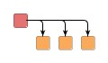
|
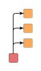
|
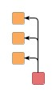
|
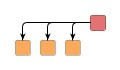
|
|
Default orientation (a.k.a. canonic subtree orientation):
DEFAULT |
90 degree:
ROT90 |
90 degree, mirrored vertically:
MIR_VERT_ROT90 |
Mirrored vertically:
MIR_VERT |
|
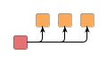
|
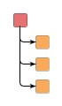
|
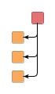
|
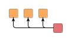
|
|
Mirrored horizontally:
MIR_HOR |
90 degree, mirrored horizontally:
MIR_HOR_ROT90 |
270 degree:
ROT270 |
180 degree:
ROT180 |
A concrete subclass of AbstractRotatableNodePlacer is given the modification matrix that describes the desired subtree orientation at initialization time. The following methods/constructors provide matrix-related configuration support:
protected AbstractRotatableNodePlacer( AbstractRotatableNodePlacer.Matrix modificationMatrix) |
|
| Description | Constructor of AbstractRotatableNodePlacer. (To be overridden in concrete subclasses.) |
AbstractRotatableNodePlacer.Matrix getModificationMatrix() |
|
| Description | Getter for the current modification matrix. |
Figure 5.78, “Subtree arrangement with NodePlacer implementations” shows arrangements of an example (sub)tree (in canonic subtree orientation) using different node placer implementations. Note the (sub)tree's emphasized root node.
Figure 5.78. Subtree arrangement with NodePlacer implementations
|
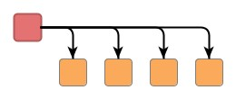
|
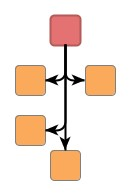
|
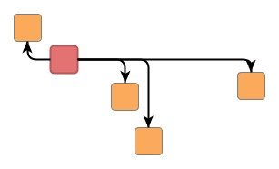
|
| SimpleNodePlacer | LeftRightPlacer | FreePlacer |
|
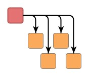
|
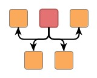
|
|
| DoubleLinePlacer | BusPlacer |
Class AssistantPlacer uses a data provider that holds boolean values which
denote whether a node is a so-called "assistant" or not.
The data provider is bound to the tree using the look-up key
ASSISTANT_DPKEY .
Assistants are placed using LeftRightPlacer, non-assistants are placed using
another node placer which can be configured using a setter method.
Figure 5.79, “Subtree arrangement provided by AssistentPlacer” depicts the supported arrangements for the
so-called non-assistant nodes.
.
Assistants are placed using LeftRightPlacer, non-assistants are placed using
another node placer which can be configured using a setter method.
Figure 5.79, “Subtree arrangement provided by AssistentPlacer” depicts the supported arrangements for the
so-called non-assistant nodes.
Besides the generic labeling support as described in the section called “Generic Labeling”, which is available with all yFiles layout algorithms, generic tree layout additionally features integrated labeling.
Integrated labeling is available for both node labels and edge labels. They are taken into consideration when determining the shape of a subtree. With this strategy it is guaranteed that no label will overlap other objects in the diagram. The following methods can be used to enable integrated labeling:
void setIntegratedEdgeLabeling(boolean integratedEdgeLabeling) |
|
| Description | Enables/disables integrated edge labeling and node labeling, respectively. |
See also the section called “Integrated Labeling”.
Optimal label placement with integrated labeling can be achieved using FreeEdgeLabelModel as the label model for the edges.
As explained in the section called “Label Models”, this edge label model is ideally
suited in combination with integrated labeling and yields the best match for a label
location that is computed by GenericTreeLayouter.
as the label model for the edges.
As explained in the section called “Label Models”, this edge label model is ideally
suited in combination with integrated labeling and yields the best match for a label
location that is computed by GenericTreeLayouter.
Obeying port constraints for edges is part of the responsibilities of a node placer implementation. A node placer determines:
The predefined node placer implementations from package y.layout.tree obey both
types of port constraints, weak and strong.
The port constraints are retrieved from data providers that are bound to the
graph using the look-up keys
SOURCE_PORT_CONSTRAINT_KEY and
TARGET_PORT_CONSTRAINT_KEY
and
TARGET_PORT_CONSTRAINT_KEY ,
respectively.
,
respectively.
By means of interface PortAssignment the ports of all edges adjacent to a given
tree node can be assigned.
To this end, method
assignPorts is called immediately before a subtree's node placer is invoked.
Obviously, assigning edge ports at a tree node is confined to the target port
of the incoming edge from the parent node, and the source ports of all outgoing
edges to child nodes.
is called immediately before a subtree's node placer is invoked.
Obviously, assigning edge ports at a tree node is confined to the target port
of the incoming edge from the parent node, and the source ports of all outgoing
edges to child nodes.
GenericTreeLayouter by default supports node halos as soon as they are declared
using the data provider key NODE_HALO_DPKEY .
During layout calculation, it takes any specified additional paddings around nodes
into consideration and keeps the areas clear of other graph elements.
The labels of a node and its adjacent edge segments are not affected and can still
be placed inside or cross the node's halo.
.
During layout calculation, it takes any specified additional paddings around nodes
into consideration and keeps the areas clear of other graph elements.
The labels of a node and its adjacent edge segments are not affected and can still
be placed inside or cross the node's halo.
GenericTreeLayouter can be used in combination with a java.util.Comparator implementation that allows to dynamically determine the sequence of child nodes in a subtree. Supplied with a root node's outgoing tree edges, the comparator decides on their precedence. Based on this scheme, the comparator that is conveniently returned by class DefaultNodePlacer provides support for incrementally inserting new child nodes at optimal positions with respect to already arranged child nodes.
Comparators can be registered both to handle all nodes, i.e., act globally on the entire tree, or to handle only a specific root node, i.e., act locally on a subtree. The following method can be used to configure the default comparator for an entire tree:
void setDefaultChildComparator(Comparator defaultChildComparator) |
|
| Description | Sets the default Comparator implementation for a tree. |
To specify comparators individually for each subtree, a data provider holding
such supplemental layout data must be bound to the graph.
The data provider is expected to be registered with the graph using key
CHILD_COMPARATOR_DPKEY .
.
Class DefaultNodePlacer provides a suitable default comparator that can conveniently be used to support incremental tree layout scenarios with subtrees. The comparator enables dynamic rearrangement of all child nodes in a given subtree according to their relative coordinates. Example 5.38, “Setup for incremental layout with GenericTreeLayouter” demonstrates the setup of GenericTreeLayouter using the default node placer and port assignment implementations, and additionally registering the default comparator from class DefaultNodePlacer.
Example 5.38. Setup for incremental layout with GenericTreeLayouter
// Create a GenericTreeLayouter object that uses default node placer and
// port assignment implementations, i.e., classes DefaultNodePlacer and
// DefaultPortAssignment, respectively.
GenericTreeLayouter gtl = new GenericTreeLayouter();
// Register the comparator returned by class DefaultNodePlacer to take care of
// the sequences of child nodes in each subtree.
gtl.setDefaultChildComparator(
((DefaultNodePlacer)gtl.getDefaultNodePlacer()).createComparator());
By default, GenericTreeLayouter supports layout of tree structures where entire
subtrees are contained in group nodes.
Both position and dimension of group nodes will be calculated by the algorithm.
The
setGroupingSupported method can be used to control this functionality.
method can be used to control this functionality.
Additional size requirements of group nodes (e.g., special insets or space for custom
labels) can be specified for each group node separately by means of a data provider
that provides YInsets objects.
The data provider must be registered with the input graph using the key
GROUP_NODE_INSETS_DPKEY
objects.
The data provider must be registered with the input graph using the key
GROUP_NODE_INSETS_DPKEY .
.
GenericTreeLayouter provides special support for so-called multi-parent structures, where multiple nodes share both the same direct predecessor node(s) as well as the same direct successor node(s). Multi-parent structures that are contained in group nodes are also supported. It is important, however, that all nodes belonging to the same multi-parent structure are contained in the same group node.
Technically, such a structure does not fit the very definition of a tree graph. Nevertheless, it can be handled within the context of tree graphs very well. However, to properly detect and handle these structures, the special support needs to be explicitly enabled using the following method:
void setMultiParentAllowed(boolean multiParentAllowed) |
|
| Description | Enables GenericTreeLayouter's special support for multi-parent structures. |
The following figure shows a graph containing multi-parent structures (note the emphasis on the nodes). All nodes belonging to such a structure are placed side by side. By default, the edges incident to these nodes are routed using bus-style edge routing.
Note that the two nodes at the root of the graph also constitute a multi-parent structure: they share an "imaginary" direct predecessor.
To configure layout and drawing options of a multi-parent structure, class MultiParentDescriptor can be used.
For example, the following options can be set:
can be used.
For example, the following options can be set:
A MultiParentDescriptor instance can be specified for the nodes of a multi-parent
structure by means of a data provider that is bound to the graph.
The data provider is expected to be registered with the graph using key MULTI_PARENT_DESCRIPTOR_DPKEY .
It is important that all nodes belonging to the same multi-parent structure yield
the same descriptor instance.
.
It is important that all nodes belonging to the same multi-parent structure yield
the same descriptor instance.
These options are available:
| Minimum Node Distance | |
| API | void setMinimumNodeDistance(double alignment) |
| Description | Determines the minimum distance between the nodes of a multi-parent structure. |
| Minimum Bus Distance | |
| API | void setMinimumBusDistance(double alignment) |
| Description | Determines the minimum distance between the nodes of a multi-parent structure and their incident edges that are routed bus-style. |
| Vertical Alignment | |
| API | void setVerticalAlignment(double alignment) |
| Description | Determines the vertical alignment of the nodes of a multi-parent structure within their layer. Values can be set from 0.0 (top) to 1.0 (bottom). See also Figure 5.81, “Vertical alignment of the nodes of a multi-parent structure”. |
Figure 5.81. Vertical alignment of the nodes of a multi-parent structure
|
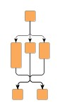
|
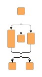
|
 |
| Aligned at the top with Vertical Alignment = 0.0 | ... in the middle with Vertical Alignment = 0.5 | ... at the bottom with Vertical Alignment = 1.0 |
The routing style of the edges incident to nodes of the multi-parent structure can be configured through the following method:
void setEdgeStyle(byte style) |
|
| Description | Configures the routing style for edges incident to the nodes of a multi-parent structure. |
The following figure shows the different edge routing styles side by side:
Figure 5.82. Edge routing styles determined by the MultiParentDescriptor
|
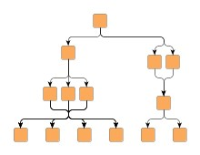
|
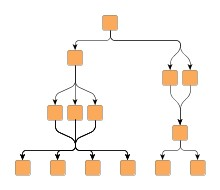
|
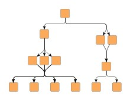
|
| Orthogonal edge routing (with rounded bends). | Polyline edge routing. | Straight-line edge routing. |
It is important to note that the routes of edges incident to the nodes of multi-parent structures are only half-way determined by the routing style configured in the MultiParentDescriptor. The other half is under the control of the actual NodePlacer implementation that is used by GenericTreeLayouter.
With regard to edge routing, NodePlacer implementation DefaultNodePlacer yields the best results in conjunction with multi-parent structures.
Multi-parent support also harmonizes well with BusPlacer
yields the best results in conjunction with multi-parent structures.
Multi-parent support also harmonizes well with BusPlacer ,
LeftRightPlacer
,
LeftRightPlacer , and DendrogramPlacer
, and DendrogramPlacer .
However, the following options of DefaultNodePlacer are not supported in conjunction
with multi-parent structures:
.
However, the following options of DefaultNodePlacer are not supported in conjunction
with multi-parent structures:
Also with regard to edge routing, if port assignment implementations are registered for the nodes of a multi-parent structure, certain aspects of port constraint configuration of the incident edges will be ignored in order to prevent situations where this would lead to confusing (or even conflicting) edge routes in the resulting layout. In particular, this applies to the direction specified by a port constraint of an incident edge: the edge is instead always routed in flow direction. Note that all nodes of a multi-parent structure should yield the same port assignment, if any.
The tutorial demo application IncrementalTreeLayouterDemo.java provides an extensive presentation of the powerful features that are offered by GenericTreeLayouter using the default node placer and port assignment implementations. It also demonstrates the incremental tree layout capabilities of GenericTreeLayouter. Setup and usage of GenericTreeLayouter with other node placer implementations is demonstrated in the following tutorial demo applications:
Also, TreeLayoutConfigurationDemo.java and TreeLayoutConfiguration.java present further advanced generic tree layout configurations.
|
Copyright ©2004-2015, yWorks GmbH. All rights reserved. |